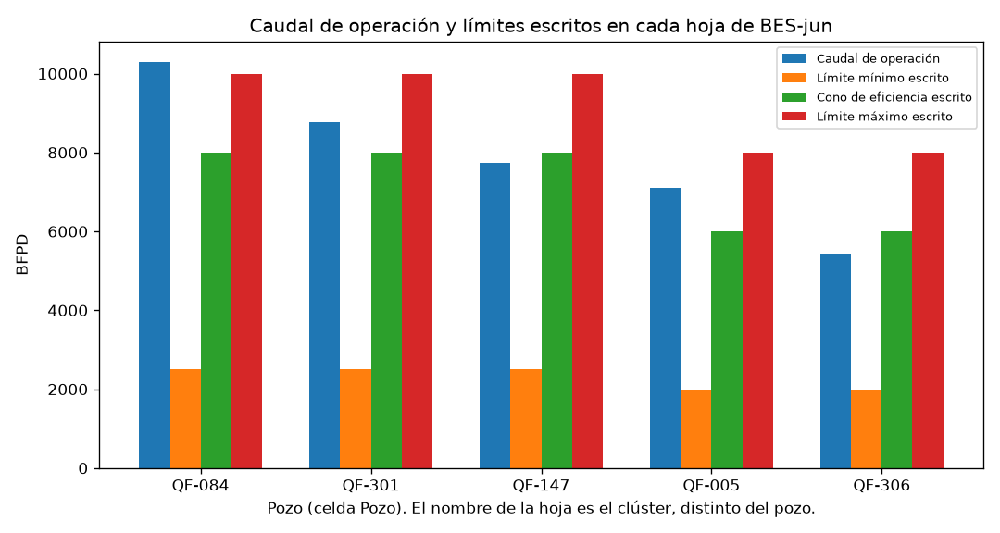
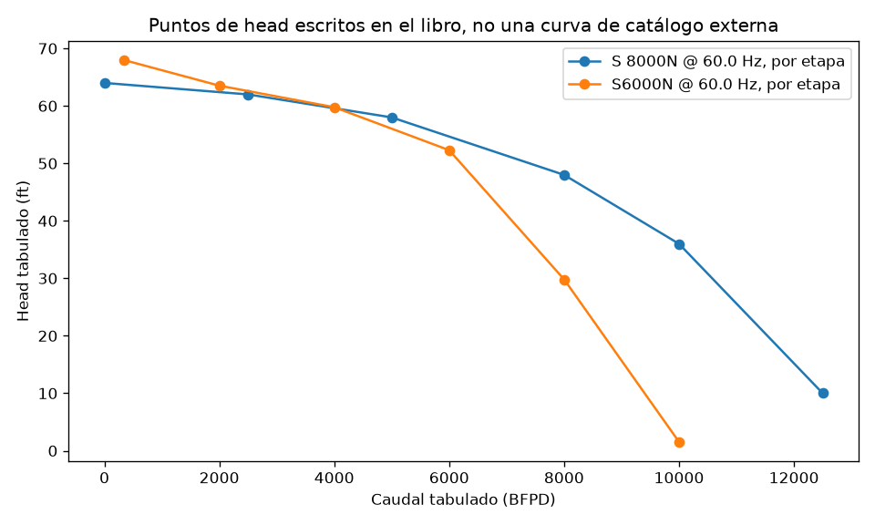

Fecha: 2026-10-17. Libro: Copia de FINAL BES-jun.xlsx. Copia leída: entrada/BES_jun.xlsx. SHA-256 ccb5a738baea13321993e8b6eccefd6cac90ecda86b1c4b9181f897fcfa83f85. Expediente datasets/en_uso/BES-jun. Estado: Listo para revisión.
Este informe no valida un modelo. Reproduce cuentas que el propio libro ya guarda y las separa de lo que no se puede afirmar.
El libro tiene cinco hojas. En cada una, Cluster: coincide con el nombre de la hoja y Pozo: trae otro código: QF-084, QF-301, QF-147, QF-005 y QF-306. El libro no dice cuál de los dos identifica el pozo. No es RB-1521-PY-121120.xls ni RB-IA-2191-Data.xlsx.
La cadena de celdas —gravedad, gradiente, PIP en pies desde la presión de sensor, fricción y THD— se rehízo en Python y coincide con el valor cacheado de las cinco hojas. Esa coincidencia comprueba la transcripción.
No hay serie de días. No hay pronóstico. El PIP en pies sale de la presión de sensor; no es una estimación sin sensor ni una predicción contrastada con otra medición.
Cinco hojas visibles, sin nombres definidos. El archivo se leyó en memoria y no se guardó. En QF-549HST hay 13 cachés #DIV/0! en la columna D, en promedios de celdas vacías del bloque eléctrico. No entran en la cadena de PIP y THD. Las otras cuatro hojas no muestran ese error. Cuatro hojas tienen =TODAY(); el cache 2026-10-17 es la fecha de cálculo, no una fecha de prueba. QF-549HST tiene escrita 2017-09-06.
BS&W está rotulado «%» y la fórmula de densidad lo usa como fracción. API 12 °API, presión de yacimiento 1100 psi y presión de burbuja 130 psi se repiten en las cinco hojas; no se tomó eso como un mismo yacimiento.
QF-005: caudal de prueba 7094.4 BFPD (295.6*24) y caudal de operación 7116 BFPD (296.5*24). El factor 24 no está definido en otra celda.
El libro no declara una llave única. Cluster: coincide con el nombre de la hoja. Pozo: trae otro código. Cada hoja se calculó aparte.
| Pozo | Clúster | Bomba | Etapas | Hz | Caudal BFPD | Sensor psi | THP psi | Límite máx. | PIP ft | THD ft |
|---|---|---|---|---|---|---|---|---|---|---|
| QF-084 | QF-554H | S 8000N | 53 | 63 | 10301 | 732 | 183 | 10000 | 1714.50 | 2083.22 |
| QF-301 | QF-545H | S 8000N | 50 | 57 | 8767 | 667 | 210 | 10000 | 1558.04 | 1971.96 |
| QF-147 | QF-500H | S 8000N | 36 | 56 | 7728 | 821 | 194 | 10000 | 1920.73 | 1517.21 |
| QF-005 | QF-378HST | S6000N | 31 | 67 | 7116 | 810 | 145 | 8000 | 1891.21 | 1592.46 |
| QF-306 | QF-549HST | S6000N | 31 | 62 | 5419 | 607 | 177 | 8000 | 1422.32 | 1814.51 |
PIP y THD son los de la fórmula de la hoja, confirmados por las pruebas. No son una estimación independiente.
Unidades de rótulo: Hz, BFPD, psi, ft, inch, °API, °F, °C, HP. Pendientes: BS&W, el rótulo psi*ft, un rótulo Kg/Lt sobre densidad en lb/gal, y la columna EFF de la tabla.
Se transcribieron F-01 y las celdas de densidad, gradiente, PIP en ft, THP en ft, Hazen-Williams y THD. El modelo de E1 que resuelve el caudal desde la potencia no se aplicó. La mediana de 4,3 % del artículo SensorLess no es un resultado de este libro.
No hay pronóstico. Faltarían una variable objetivo, tiempos de operación y una medición de referencia distinta de las entradas. La presión de sensor es entrada del PIP en pies.
Como cálculo del libro: el caudal de QF-084 está 301 BFPD por encima del límite máximo escrito en su hoja. Los otros cuatro caudales caen entre el mínimo y el máximo de la suya. Esos límites son celdas del archivo.

